| 日付 | 2019年8月25日（日） |
|---|---|
| 山域 | 南アルプス |
| メンバー | 家族（妻、長女・8歳、長男・6歳） |
| 山行形態 | 子連れ日帰り |
| アクセス | 車 |
| ルート (Map) | 尾白川渓谷駐車場 (8:25) - (9:07) 登山道入口 - (10:47) 神蛇滝 (10:52) - (11:39) 不動滝 (12:42) - (14:13) 尾白川渓谷駐車場 |
今週末も不安定な空模様。高山に向かう気にはなれない。
かといって低山は暑すぎるので、涼を求めて渓谷に行くことにする。
今回選んだのは尾白川渓谷。南アルプスにある名高い渓谷だ。
以前、日向山に登った時はほとんど見学できなかったため、
一度じっくり歩いてみたいと思っていた場所だ。
駐車場は非常に広い。そしてすでに多くの車が停まっている。
皆、尾白川渓谷に向かうのだろうか？
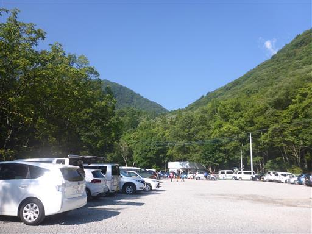
準備を整えて歩き始める。ここは甲斐駒ヶ岳の登山口でもあるのだが、
長いのでここから甲斐駒を目指す人はあまりいないだろう。
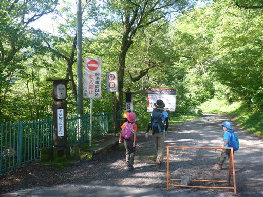
ナナフシを発見。以前鹿岳に登った時に赤ちゃんナナフシを見たが、
こちらは成虫でかなり大きい。
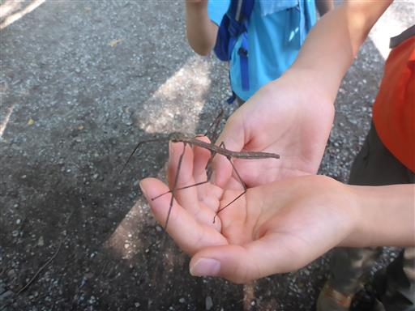
滑り台のような表面が平らな岩。
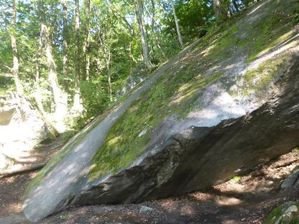
駒ヶ岳神社に到着。10年振りの訪問だ。
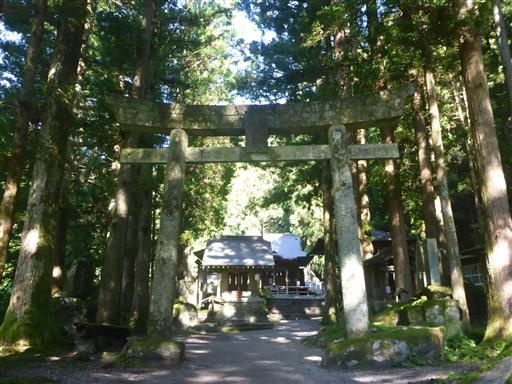
次ここに来た時は甲斐駒ヶ岳に登る時だと思っていたが、
結局甲斐駒ヶ岳は未踏峰のままだ。
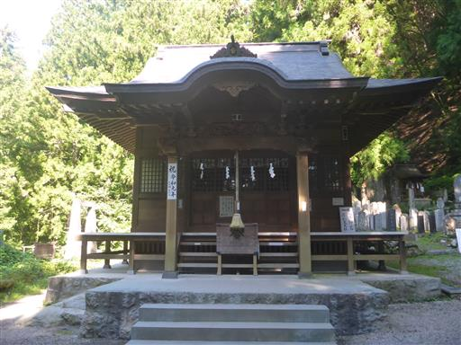
正面に尾白川渓谷の案内が出ている。
神社を抜けて先に進んでいくので、迷う人が多いのだろう。
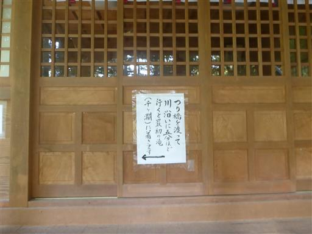
吊橋に到着。
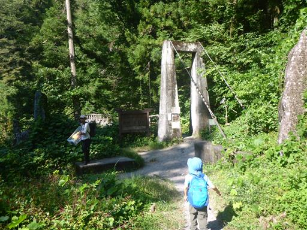
CMに出てくる橋らしい。
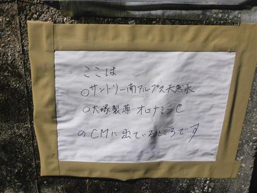
吊橋を渡る。頑丈な造りでほとんど揺れないが、5人ずつ渡るように書かれている。
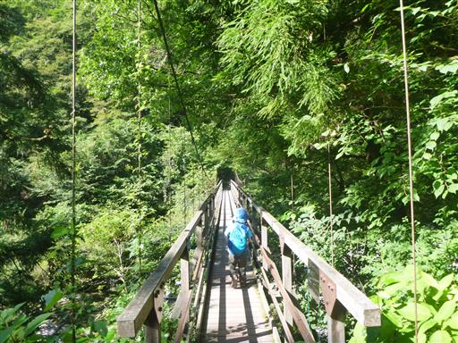
橋から尾白川渓谷を見下ろす。すでに川遊びしている人が見られる。
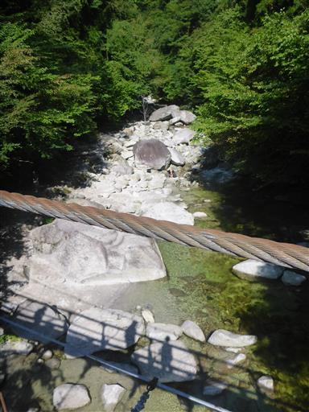
川辺に下りる。水は先週訪れた道志川より冷たい。
標高3000m近くの甲斐駒ヶ岳から流れてくる川なので冷たいのは当然だが。
泳いでいる人も見られるが、かなり寒そうだ。
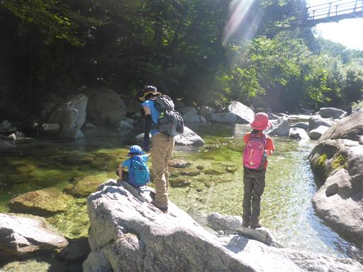
岩に穴が3個開いている。ポットホールかと思ったが、人工的な穴のようだ。
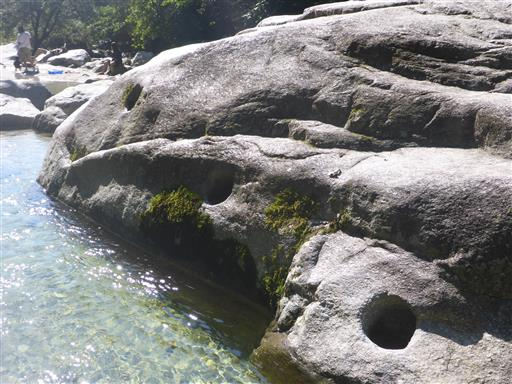
息子は早速手頃な岩を見つけて登っている。
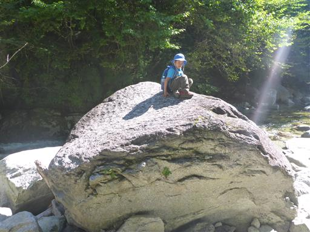
少し川と戯れたら、先に進むことにする。
子供達は岩をピョンピョンと飛び越えていく。
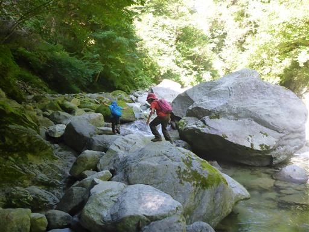
大きな岩を見つけると登り出すため、なかなか前に進まない。
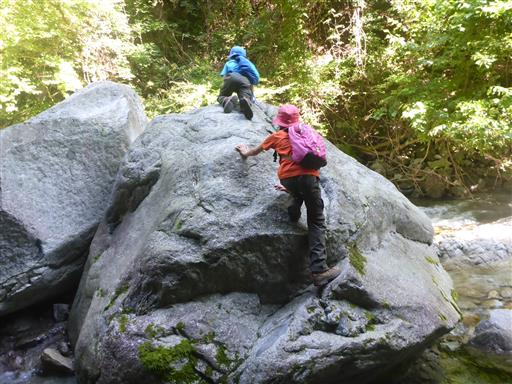
最初の滝に到着。しかしこの角度からではよく滝が見えない。
川に入らないと滝の全貌は見えなさそうだ。
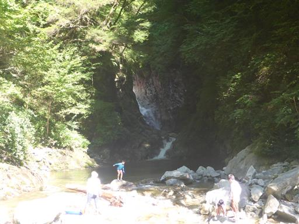
少し戻って登山道に入る。ここから先は滑落死亡事故が多発しているらしい。
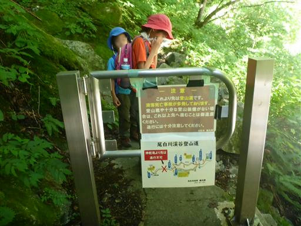
巨大な鉄製の階段が現れる。
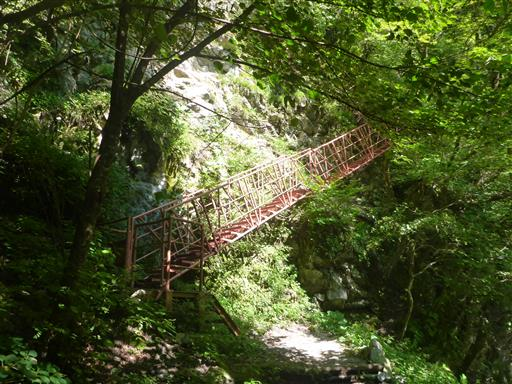
鎖場。難所と言えるような場所は無いが、
トラバース道が続き、右側は急斜面のため気が抜けない。
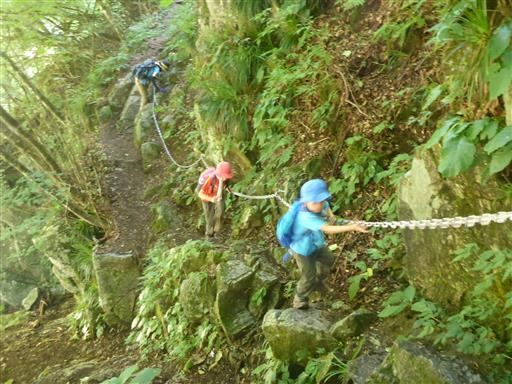
ところどころで川の畔に下りられる。
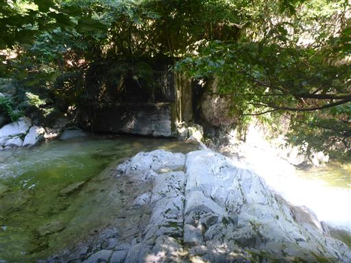
立派な滝だが、名前は不明。
見上げると予報に反してきれいな青空が広がっている。
こんなに安定した天気であれば、高山に行っても問題なかった。

滝の側の岩の庇には巨大なハチの巣がある。
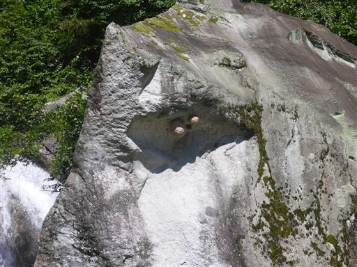
子供達は岩の上を歩き回ったり、川に触れたりして遊んでいる。
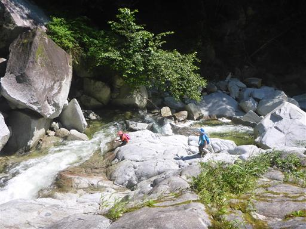
岩と岩の間に大きな穴があり、下には水が見える。
岩の下は川なのだろうか？落ちたら戻ってこれなさそうだ。
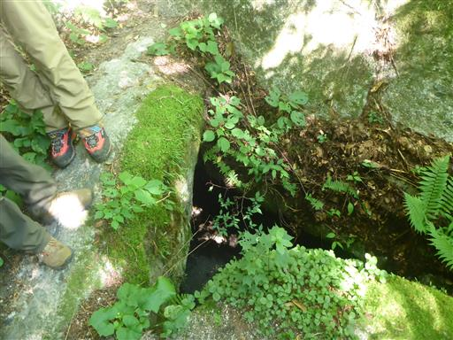
河原の砂浜。周りは岩や木に囲まれていて非常に静かな空間だ。
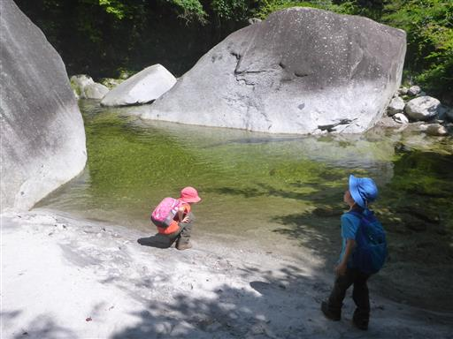
きれいな水なのだが、この渓谷の水の色は青色や緑色ではなく茶色に近い。
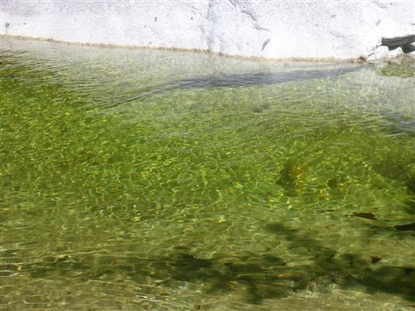
旭滝に到着。周囲はヌルヌルのすごく滑りやすい岩でかなり注意が必要だ。
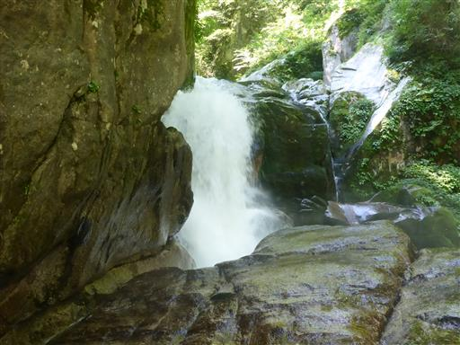
さらに奥に進む。トラバース道は続く。
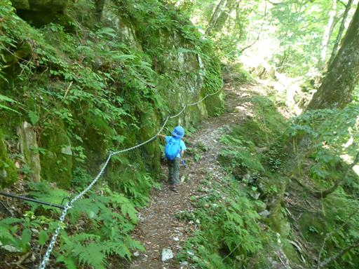
モサモサと生えている苔。
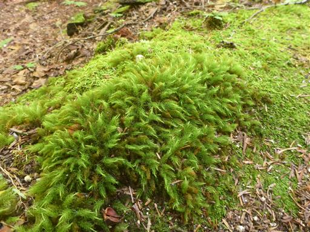
急斜面を木の根に捕まって登る。
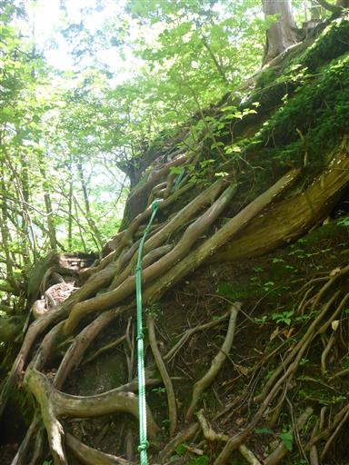
岩の間をすり抜ける。スリムでないと通過できない。
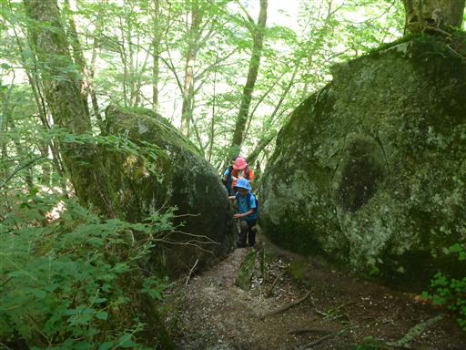
神蛇滝に到着。三段の美しい滝だが、ちょっと遠い。
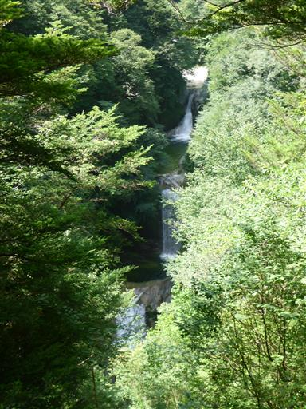
滝の展望台へは割れた岩に掛けられた木橋を渡る。
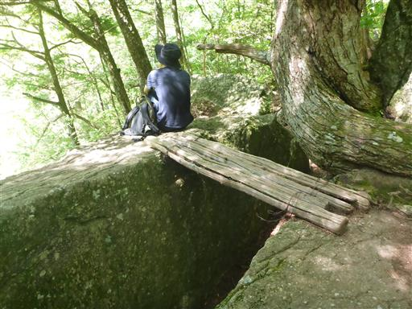
子供達は岩の割れ目の下に降りて遊んでいる。
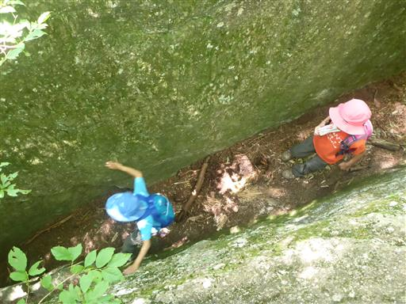
神蛇滝から先は通行止めなのか、そうでないのか、今一情報がはっきりしなかったが、
周りの人から問題ないと教えてもらったので、先に進むことにする。
見た感じ、登山道の整備状況は問題なさそうだ。
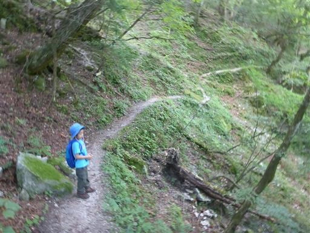
足元にヤマジノホトトギスの花が咲いている。
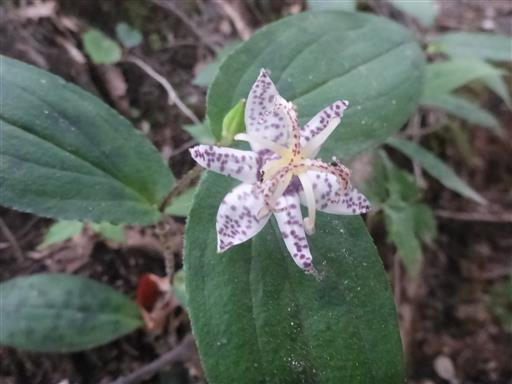
ラッパ状のキノコ。
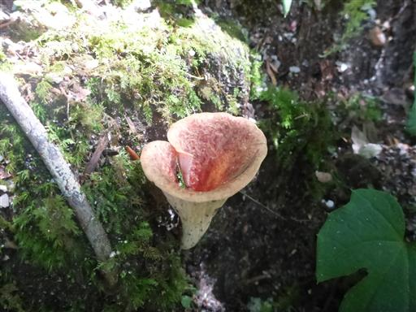
ここにも鎖場が少しある。
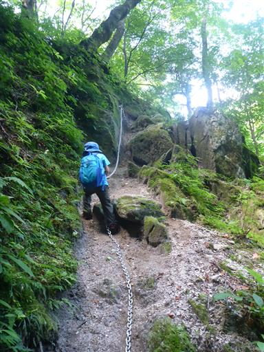
ところどころに橋があるのだが、定員が4人だったり、5人だったり、6人だったり、バラバラだ。
何を根拠に定員を決めているのだろう？
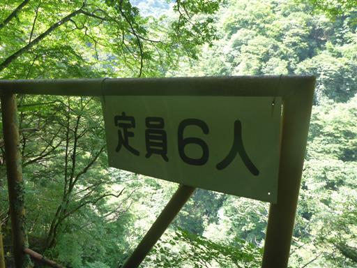
大きな吊橋を渡る。
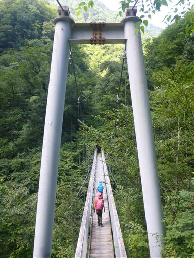
息子がカエルを捕まえる。まだ小さなカエルだ。
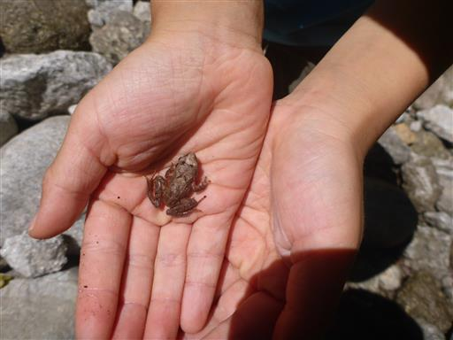
不動滝直下は大きな岩があり、ロープに捕まって登る。
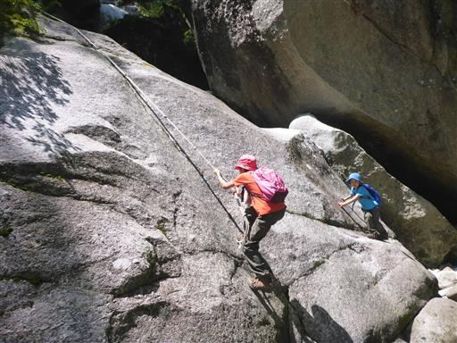
不動滝に到着。何の変哲もない形だが、水量が多く迫力がある。
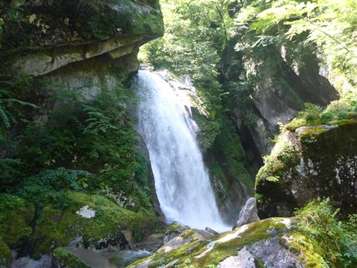
滝に近づいてみる。滝壺の側はヌルヌルの岩と木に覆われた場所で、
非常に滑りやすく危険だ。
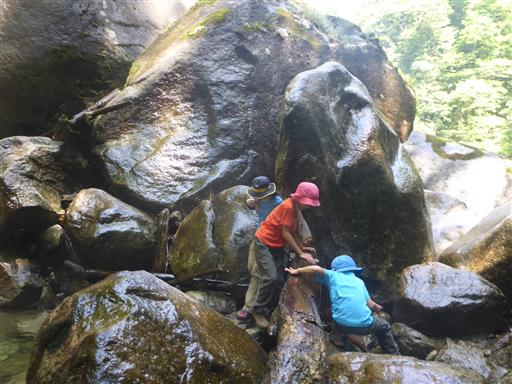
間近で望む不動滝。水しぶきが激しく寒いくらいだ。
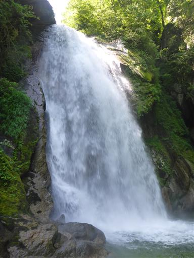
慎重に岩を下りる。
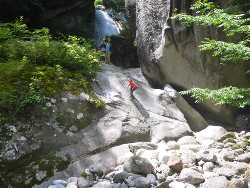
息子は一足先に下りて岩の上でお昼寝。この岩で昼食をとることにする。
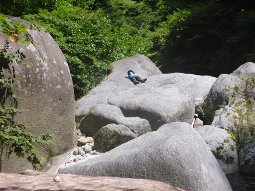
昼食後は川の側まで下りて水と戯れる。
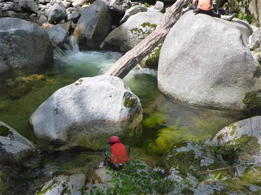
岩を下りたは良いが登れない。下りる前からこうなる事は分かっていたが。。。
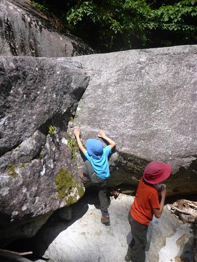
昼食後は神蛇滝まで元来た道を戻る。
神蛇滝から先の渓谷沿いの道は一方通行のため、尾根道を歩く。
尾根道の標識が木に飲み込まれている。
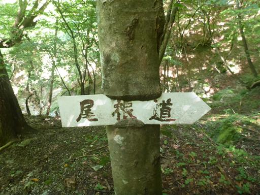
ピンクのミズヒキに混ざって白いミズヒキが咲いている。
渓谷入口に戻ってくる。人は増えてかなり賑わっている。
駐車場もいっぱいだ。川遊びとして人気の場所のようだ。
少々歩き足りないが、涼しさを感じられる山歩きだった。